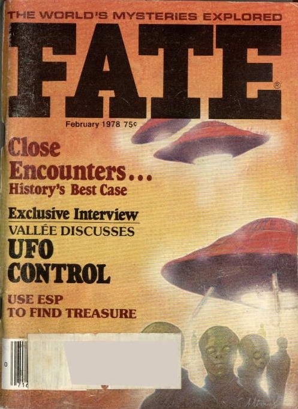

Couverture de Fate ce mois-là sur les "rencontres rapprochées" et une interview de
Jacques Vallée sur l'hypothèse du "système de contrôle"

(et non le comme le déclareront en premier lieu des témoins)
A Poya (Nouvelle Calédonie, Outre Mer), plusieurs personnes observent dans le ciel le
passage rapide d'un ovale brillant avec une trajecoire rectiligne. Aucun bruit et aucune trainée ne sont remarqués
GEPAN: PAN classé C.
A La Réole (Gironde, Aquitaine), 1 témoin voit en
direction du sud-est une sphère de couleur rouge très vif. Située juste au-dessus de l'horizon cette sphère descent
progressivement vers le sol puis disparaît en lassant une trainée de flammes. L'observation a duré 1 mn 1/2 environ.
Aucun autre témoignage n'a été recueilli par le GEPANGEPAN: PAN classé C.
À Sainte Soulle "Le Grolleau" (N11), une personne, à
l'arrêt dans sa voiture, voit un cigare horizontal monter lentement. D'un coté, il a l'aspect d'une boule de fumée
lumineuse. Le phénomène semble pivoter et éclaire le paysage en blanc comme en plein jour. Un son comme coup de
canon retentit alors, détournant l'attention du témoin qui lorsqu'il regarde de nouveau vers le phénomène et
constate qu'il a disparu. Seul un trait rouge file dans le ciel. LDLN n° 205 p. 16Eric Maillot proposera une explication par la pleine Lune, à la position du phénomène observée, pouvant être à un moment masquée par un nuage. Le bruit serait attribuable à une cause distincte (pot d'échammpement, pétard, etc.)
Lancement du 1er satellite Navstar du réseau américain GPS.
A Chabeuil (Drôme, Rhône Alpes), une automobiliste
et son fils aperçoivent un phénomène très lumineux avec des fenètres ovales semblant 2 m du sol. De couleur orange à
la forme d'une banane avec les extrémités tournées vers le haut qui émettent des étincelles orange et bleues, il
"décolle" en prenant de la vitesse selon une trajectoire nord-sud puis se stabilise avant de disparaître
instantanément. L'observation a duré durant laquelle aucun bruit particulier n'a été entendu.
Aucune trace n'a été découverte sur les lieux GEPAN: PAN classé D.